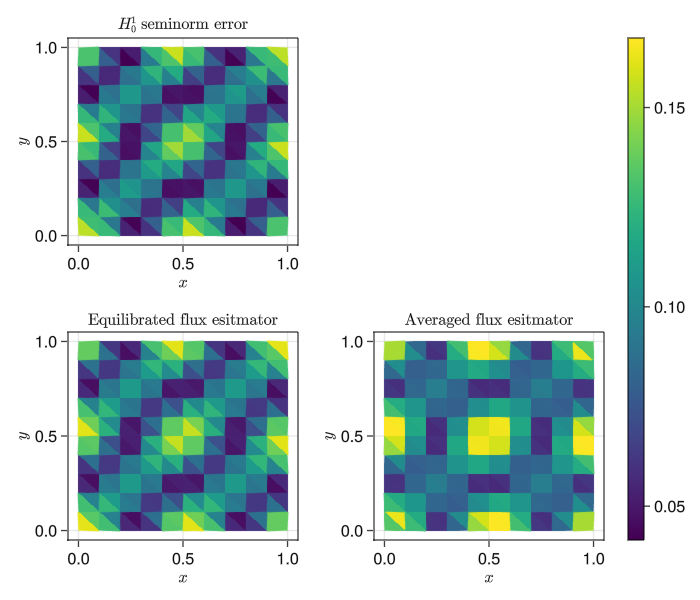

This package is based on the Gridap.jl to provide tools to calculate a posteriori error estimates for numerical solutions of partial differential equations (PDEs). For simplicity, we consider here the Poisson equation \[\begin{align}
- \Delta u &= f &&\text{in }\Omega\\
u &= g &&\text{on }\partial\Omega.
\end{align}\] We suppose we have already computed a conforming approximation \(u_h \in V_h\subset H^1_0(\Omega)\) to the solution \(u\) in Gridap.jl by solving \[(\nabla u_h, \nabla v_h) = (f, v_h)\quad\forall v_h\in V_h,\] for this see for example the first Gridap.jl tutorial. The EqFlux.jl library then provides the tools to compute an estimator \(\eta(u_h)\) such that the error measured in the \(H^1_0\)-seminorm can be bounded as \[\|\nabla(u - u_h)\| \le \eta(u_h),\] which we refer to as reliability of the estimator. We also can prove the bound \[\eta(u_h) \lesssim \|\nabla(u - u_h)\|\] which we refer to as efficiency. The main ingredient in computing this estimator is a reconstructed flux obtained by postprocessing that is an approximation to the numerical flux, i.e., \(\sigma_h\approx -\nabla u_h\). This flux has the important property of being “conservative over faces” in the sense that \[\sigma_h \in \mathbf{H}(\mathrm{div},\Omega).\] we provide two functions to obtain this object: build_equilibrated_flux and build_average_flux which we denote by \(\sigma_{\mathrm{eq},h}\) and \(\sigma_{\mathrm{ave},h}\) respectively. . In addition, for the equilibrated flux \(\sigma_{\mathrm{eq},h}\) satisfies the so-called equilibrium condition, i.e., for piecewise polynomial \(f\), we have \[\nabla\cdot\sigma_{\mathrm{eq},h} = f.\] In either case,the estimator takes the form \[\eta(u_h) = \| \sigma_{\cdot,h} + \nabla u_h\|.\]
We set \(\Omega = (0,1)^2\) to be the unit square in 2D. We use a uniform simplicial mesh \(\mathcal{T}_h\) to discretize this domain by the following in Gridap.jl
using Gridap
using GridapMakie
using GLMakie
n = 10 # Number of elements in x and y for square mesh
domain = (0,1,0,1)
partition = (n, n)
model = CartesianDiscreteModel(domain, partition)
# Change to triangles
model = simplexify(model)
ù죂Çï = Triangulation(model)
plt = plot(ù죂Çï)
wireframe!(ù죂Çï, color=:black)
pltWe manufacture the solution \(u = \sin(2\pi x)\sin(2\pi y)\) by choosing the right hand side:
We consider the discrete space \[V_h = \{v_h\in H_0^1(\Omega): v_h|_K \in\mathbb{P}_k(K),\quad\forall K\in \mathcal{T}_h\}.\] This is achieved through the following with Gridap.jl:
# Polynomial order
order = 1
degree = 2 * order + 2
dx = Measure(ù죂Çï, degree)
reffe = ReferenceFE(lagrangian, Float64, order)
V0 = TestFESpace(model, reffe; conformity = :H1, dirichlet_tags = "boundary")
U = TrialFESpace(V0, u)
a(u, v) = ∫(∇(v) ⊙ ∇(u)) * dx
b(v) = ∫(v * f) * dx
op = AffineFEOperator(a, b, U, V0)
uh = solve(op)
fig_soln, _ , plt = plot(ù죂Çï, uh, colormap=:viridis)
Colorbar(fig_soln[1,2], plt)
fig_solnWe can then build the fluxes \(\sigma_{\mathrm{eq},h}\) and \(\sigma_{\mathrm{ave},h}\) via the following:
using EqFlux
σ_eq = build_equilibrated_flux(-∇(uh), f, model, order)
σ_ave = build_averaged_flux(-∇(uh), model)
include(joinpath(@__DIR__, "helpers.jl"))First we calculate the estimators and the error using the fluxes and the approximate solution uh.
H1err² = L2_norm_squared(∇(u - uh), dx)
@show sqrt(sum(H1err²))
H1err_arr = sqrt.(getindex(H1err¬≤, ù죂Çï))
η_eq² = L2_norm_squared(σ_eq + ∇(uh), dx)
@show sqrt(sum(η_eq²))
Œ∑eq_arr = sqrt.(getindex(Œ∑_eq¬≤, ù죂Çï))
η_ave² = L2_norm_squared(σ_ave + ∇(uh), dx)
@show sqrt(sum(η_ave²))
Œ∑ave_arr = sqrt.(getindex(Œ∑_ave¬≤, ù죂Çï));Now we plot the estimators and errors restricted to each element (the full code can be found in helpers.jl)

We see that both estimators provide a good cellwise approximation of the error, but the one based on the equilibrated flux is closer visually. Next, we consider the divergence error, i.e., how well the reconstructed object satisfies \(\nabla\cdot\sigma = \Pi_1 f\). In particular, in the following plot we can see that the equilibrated flux estimator satisfies the divergence constraint up to machine precision, but the flux based on averaging does not.
f_proj = L²_projection(model, reffe, f, dx)
eq_div = L2_norm_squared(∇ ⋅ σ_eq - f_proj, dx)
ave_div = L2_norm_squared(∇ ⋅ σ_ave - f_proj, dx)
eq_div_vis = CellField(sqrt.(getindex(eq_div, ù죂Çï)), ù죂Çï)
ave_div_vis = CellField(sqrt.(getindex(ave_div, ù죂Çï)), ù죂Çï)
fig = plot_divergence_mismatch(ù죂Çï, eq_div_vis, ave_div_vis)This page was generated using Literate.jl.